Habilidades
Resistências
Passivas, elas garantem resistência a qualquer efeito, dano ou elemento do qual cite. Por exemplo: Resistência a Estocada, lhe protege de metade dos danos de estocada que receber, assim como garante um bônus de +2 contra ataques do mesmo tipo. Existem também efeitos escondidos que devem ser explorados por você e seu personagem.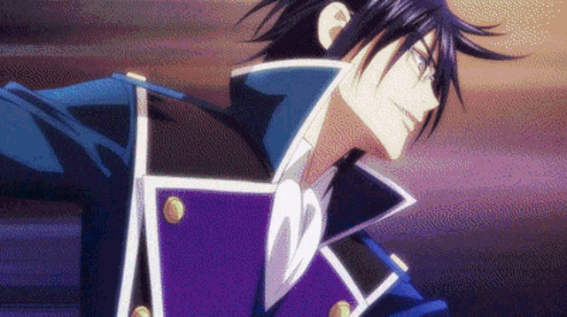
Comuns
O nível mais básico de habilidades. Elas normalmente são limitadas a apenas um único efeito sem muita flexibilidade, sendo fáceis de dominar em troca de falta de versatilidade. Isso não significa necessariamente que elas são fracas, no entanto, já que algumas delas têm efeitos letais e destrutivos.
Extras
Vários níveis acima de qualquer habilidade comum, saindo do reino mundano e indo para o nível fantasioso. Alguns exemplos de extras são『 Manipulação de Chamas 』,『 Corpo de Magíaço 』e『 Aura Mágica 』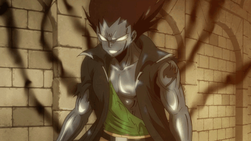
Habilidades Intrínsecas
Garantidas para toda uma espécie ,com algumas exceções, mas no geral todos de uma espécie tem. Slimes, por exemplo, sempre terão Absorver e Dissolver, uma habilidade que os permite consumir até minérios sem que se machuquem. Elas são uma "sub-categoria" de habilidades e por isso não são sua própria categoria, elas normalmente são "Comum-Intrínseca" ou até"Única-Intrínseca".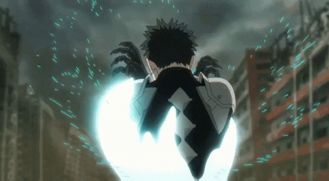
Habilidades únicas
Estão em uma categoria diferente das outras, elas são habilidades sem um nível próprio. Elas vão de habilidades como『 Prisão Infinita 』até『 Sobrevivente 』. Pense como habilidades atreladas a alma de seu usuário, dependente apenas de seus desejos em vida. E, finalmente, o mais importante. Não importando qual a habilidade que a pessoa tem, ela sempre será cobrada por adquiri-lá. Ou seja, para ganhar uma habilidade única, comum ou até suprema é exigido um peso perante sua existência, esse peso é quantificado na ficha como Pontos de Existência e são verificados ao receber uma habilidade. Caso receba uma habilidade que vá além dos seus pontos de existência, você corre o risco de inexistir. Até mesmo como habilidade temporária isso afetará sua alma e lhe garantirá cicatrizes permanentes.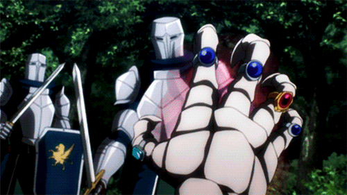
Magias
Magia
É a materialização de um conceito, seguindo uma regra específica. Por exemplo, uma magia forma a "imagem" de "absorvem calor" na forma de energia e, como efeito secundário, gera fenômenos físicos como gelo ou bolas de fogo. O lançamento de feitiços exige que os magos usem encantamentos e/ou sinais de mão para concentrar uma imagem e mana para conjurar a magia. Encantamentos e sinais de mão são apenas ferramentas usadas para ajudar a aumentar a concentração e dar ao conjurador uma imagem sólida do feitiço; como resultado, aqueles capazes de visualizar claramente o resultado desejado do feitiço podem conjurá-lo sem encantamento ou sinal de mão.Classificação das Magias
Magia Aspectual
Opera utilizando as propriedades únicas das magículas para reescrever as leis do mundo, alterando-as e conferindo-lhes novas propriedades. Isso permite que os fenômenos imaginados se manifestem na realidade. Por exemplo, magículas imbuídas com a imagem de “extinguir calor” resultarão em um efeito de gelo. Ao desenvolver ainda mais a imagem básica com uma fórmula mágica, o usuário pode adicionar condições como forma, alcance e velocidade para alcançar algo como uma Lança de Gelo. Com a magia aspectual, o componente principal do ataque é sempre a magículas que carregam a imagem incorporada do conjurador, e qualquer fenômeno visual como fogo ou gelo é meramente um componente terciário incidental do feitiço, e não o foco. Como resultado, é impossível, por exemplo, extinguir uma chama mágica com água comum.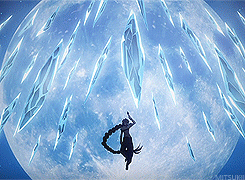
Magia Elemental
Uma forma de energia natural dos elementais em seus respectivos elementos. Esse fenômeno obedece plenamente às leis da física, diferentemente da magia comum, o que permite que a magia elemental seja conjurada sob uma “Área Antimagia” ou mesmo um “Campo Sagrado”. É possível que outros seres usem magia elemental, tomando emprestado o poder dos elementais, utilizando uma certa quantidade da mana ou magículas do usuário como catalisador. A magia elemental não requer encantamentos e qualquer um pode usá-la, desde que esteja conectado ao seu elemental contratado.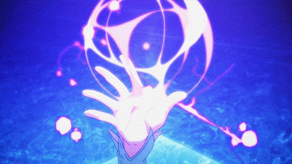
Magia Sagrada
Para que uma pessoa utilize magia sagrada, ela precisa formar um "pacto" com um deus ou ser um deus ela mesma. A condição para aprender magia sagrada como credor é simplesmente um coração que acredita em milagres. O Poder da Fé transforma seus pensamentos ou sentimentos fortes em poder, tornando-o acessível até mesmo a monstros e demônios. Uma vez que um pacto é criado entre o deus e o credor, este usa o "nome" de seu deus como um meio para abrir um canal espiritual entre os dois, oferecendo mana em troca da ajuda do deus.
Magia de Invocação
Um ramo da magia que envolve a invocação de um objeto ou ser vivo, às vezes de outro plano da realidade, e requer domínio da magia espacial para ser realizada. Os usos mais comuns da magia de invocação são para invocar demônios e, menos frequentemente, elementais ou monstros. A magia de invocação mais rara seria a invocação de seres de outros mundos, simplesmente devido ao tempo e esforço necessários para a preparação. Quase toda magia de invocação requer uma quantidade relativamente alta de magículas para ser executada e sempre envolve algum tipo de contrato ou acordo com o indivíduo invocado.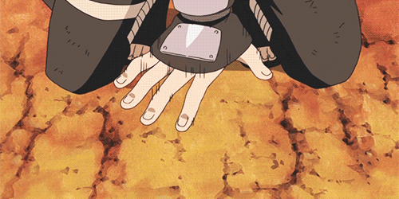
Magia de Gravação
Também conhecida como magia rúnica é menos um tipo independente de magia e mais uma técnica que utiliza runas para "encantar" pessoas ou objetos com vários feitiços, permitindo-lhes usar magia sem possuir o conhecimento ou as habilidades relacionadas.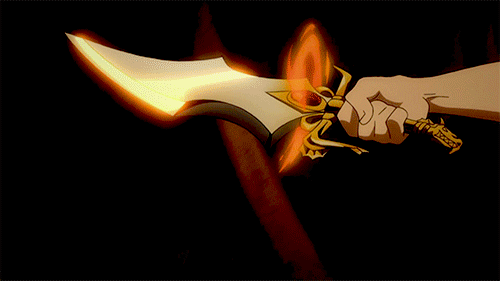
Magia de Ilusão
É um tipo de magia que se baseia tanto na magia aspectual quanto na magia elemental e funciona manipulando o corpo espiritual de um alvo ou do próprio usuário para alcançar uma ampla variedade de efeitos. Seus efeitos podem variar de efeitos simples que afetam os sentidos a magia ofensiva mais complexa que danifica diretamente o corpo espiritual.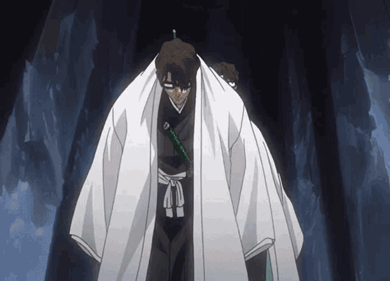
Reinos, Nações e Impérios
Impérios Orientais
Um conglomerado de mais de cem cidades que funcionam mais como um conselho único. São conhecidos por seus vastos mercados, grandes eventos como o coliseu e suas torres mágicas renomadas. Considerados como o segundo maior formador de magos do Continente Mágico, perdendo apenas para a Dinastia Feiticeira.Rua dos Bazares e a Arena do Dragão
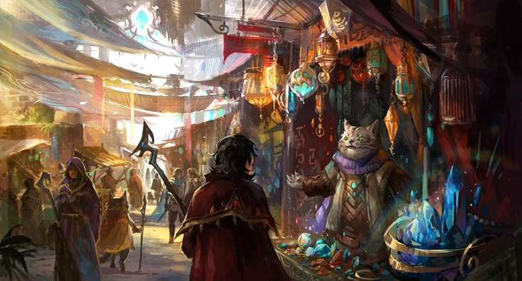
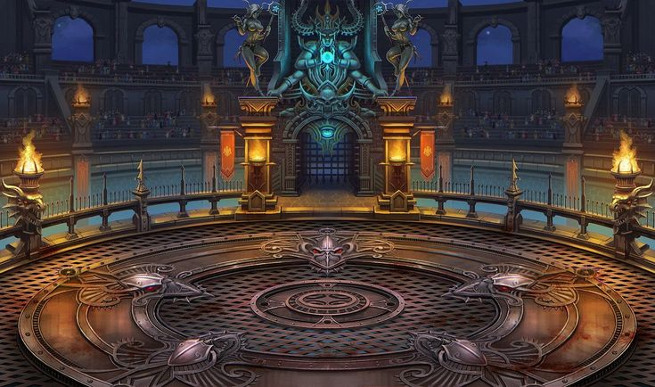
Nação Armada de Gerhardt
Nomeada após a família fundadora, são eles quem provêm armas e armaduras para todo o Continente Mágico. Se quiser uma armadura mais resistente que as escamas de um dragão ou uma arma capaz de matar um é para a Nação de Gerhardt que você vai. Considerada, também, zona neutra e o lugar mais seguro dentre todos do Continente Mágico.Fortaleza de Gerhardt e Vilas Parvus
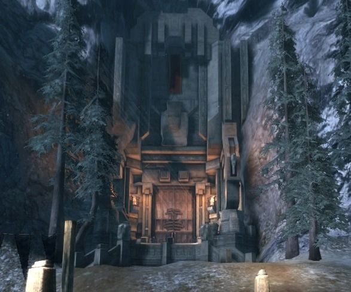
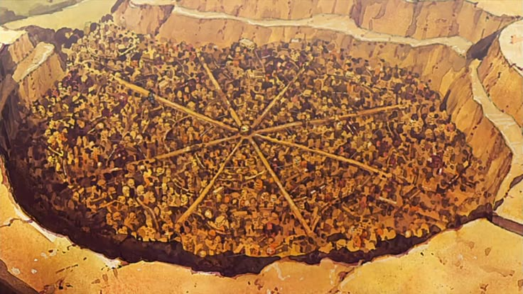
Império Oriental Unido de Alaric Eisenkorne
Pouco se sabe sobre esse império isolado, tudo que se tem sobre eles é mais antigo do que as últimas gerações de reis e qualquer contato é cortado, barcos afundados e magias de teletransporte nulificadas. Por não atacarem o resto do Continente Mágico não são considerados como uma ameaça, mas todo líder que se preza tem seu olho sobre eles.Fortaleza Central
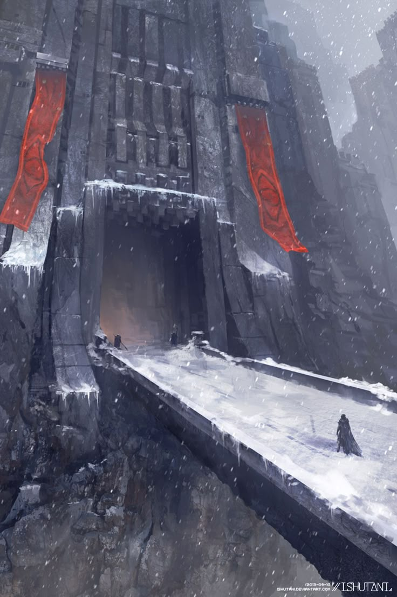
Império Sacro
Conhecido como a menor nação dentre todas, o Império Sacro é uma pequena extensão territorial dentro dos Reinos Humanos Unidos. Contendo a Grande Igreja Central, considerada ponto central de toda energia divina de todos os reinos. Por não terem moedas nem sistema monetário interno, eles funcionam na base da troca de favores, normalmente estranhando muitos viajantes novos. Normalmente algo como uma noite de estadia exige ajuda na limpeza dos pratos, do chão ou alguma função mais específica dependendo da utilidade da pessoa. Aqui fica um ponto turístico muito famoso conhecido como “O Monólito”, um grande pilar feito de uma liga especial de Aço Negro com Magíaço com os nomes de todos que morreram na batalha contra o deus maligno e contra todas suas crias do mal.O Monólito e a Capital Sagrada
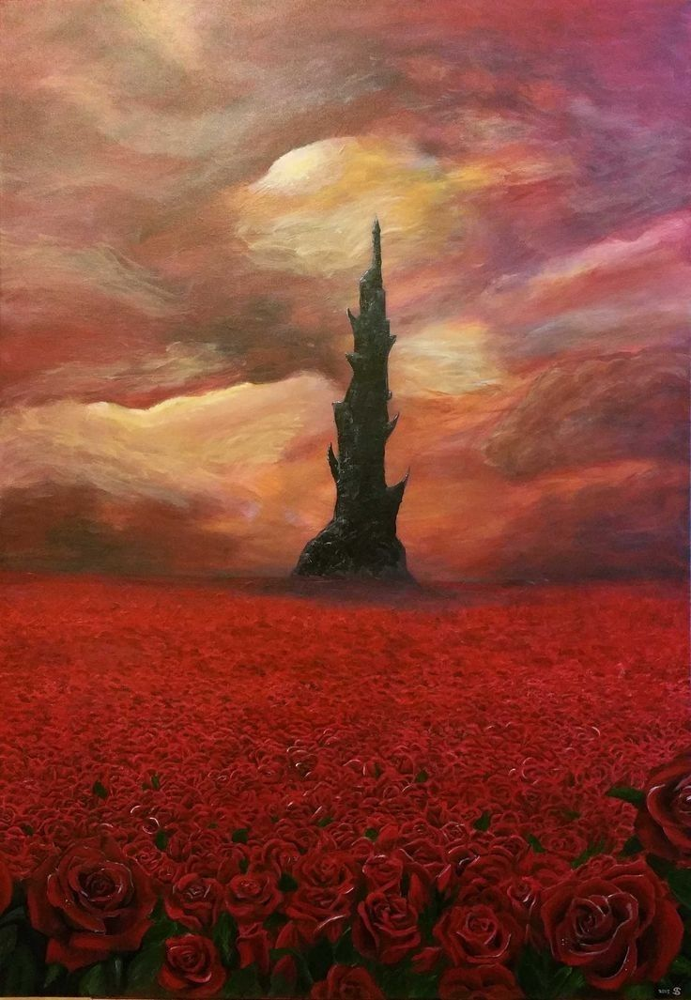
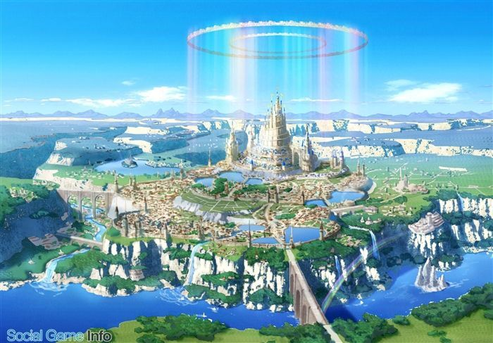
Reinos Humanos Unidos
O ponto central do Continente Mágico, o maior centro político e histórico do mundo. Dentro de sua capital estão “O Salão dos Heróis”, um museu que expõe a história da humanidade, assim como seus grandes feitos. Ainda na capital está o castelo real, a humilde moradia do Rei e da Rainha e também morada dos Grandes Heróis. Os Reinos Humanos é, também, o maior exportador de Nozes Kelbi, conhecidas mundialmente por sua grande quantidade de nutrientes e seu sabor delicioso. Junto do Porto de Arkveld, o comércio humano é limitado apenas pelo tempo do ano.Porto Arkveld e a Capital dos Reinos Humanos Unidos
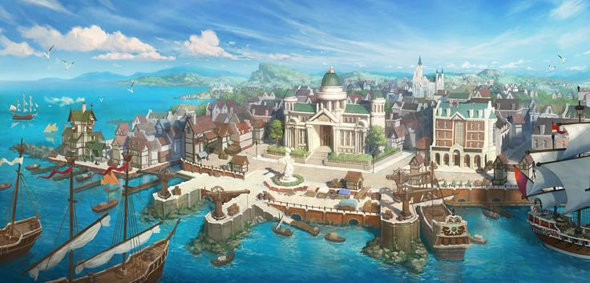
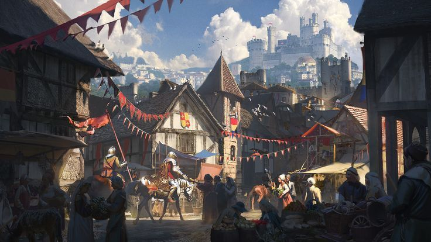
Dinastia Feiticeira
O segundo maior centro populacional atrás apenas dos Impérios Orientais, considerados também o maior formador de magos, arqueiros e elementalistas de todo Continente Mágico. Sua estrutura política é única, tendo um conselho de anciões que decidem leis e punições, mas ainda tendo uma família real que sobre-excede o conselho. Muitos desejam visitar a Dinastia devido a grande Árvore da Vida, conhecida pela famosa história da criação dos elfos. Sendo dito que o primeiro elfo nasceu de uma fruta que caiu do mais alto galho da árvore.Árvore da Vida e a Capital Élfica
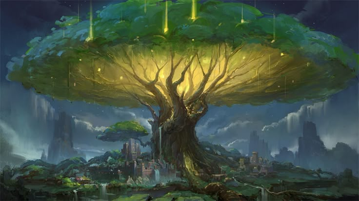
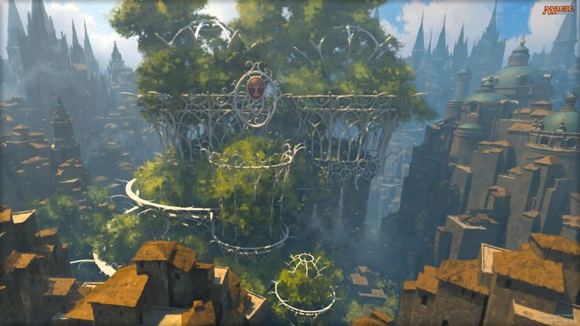
Nações Unidas dos Demônios
Um lugar repugnante, onde apenas demônios conseguem sobreviver. O território inteiro é irradiado por magículas, sendo extremamente tóxico até para espíritos, resultado da decomposição do cadáver do deus maligno.Paisagem Dominante
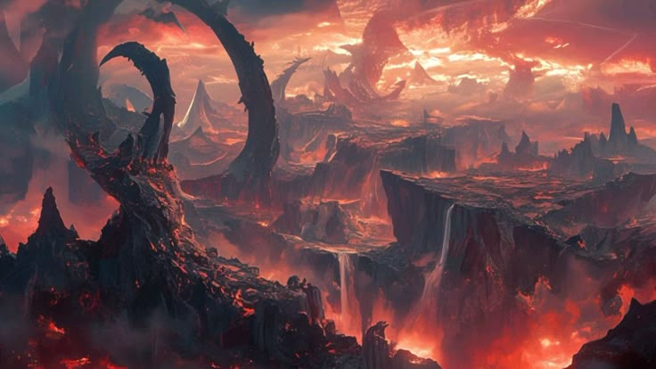
Povos Livres
Considerados como “bárbaros” por muitos, eles habitam a parte inóspita do mesmo arquipélago do Império Oriental Unido de Alaric Eisenkrone. Também não se sabe muito sobre eles, apenas que são compostos por tribos e pequenas vilas.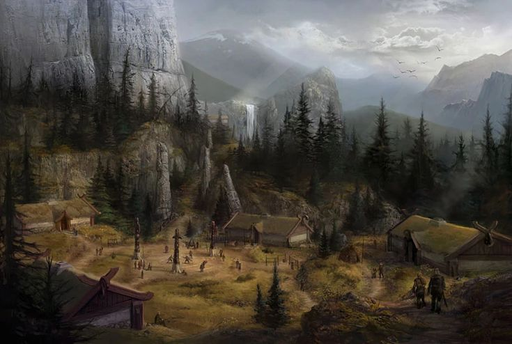
Mapa do Continente Mágico

Materiais
Existe uma extensa variedade de materiais dos quais podemos transformar em armas, armaduras, escudos ou até mesmo cadeiras ou qualquer outro objeto. Para melhor compreensão, apenas os materiais mais usados serão explicados:
Madeira
Geralmente utilizado apenas em mobílias como cadeiras ou mesas, mas existem alguns que usam madeiras mais resistentes para fabricar espadas, escudos e armaduras para treinamento. Não são recomendadas para uso em batalhas.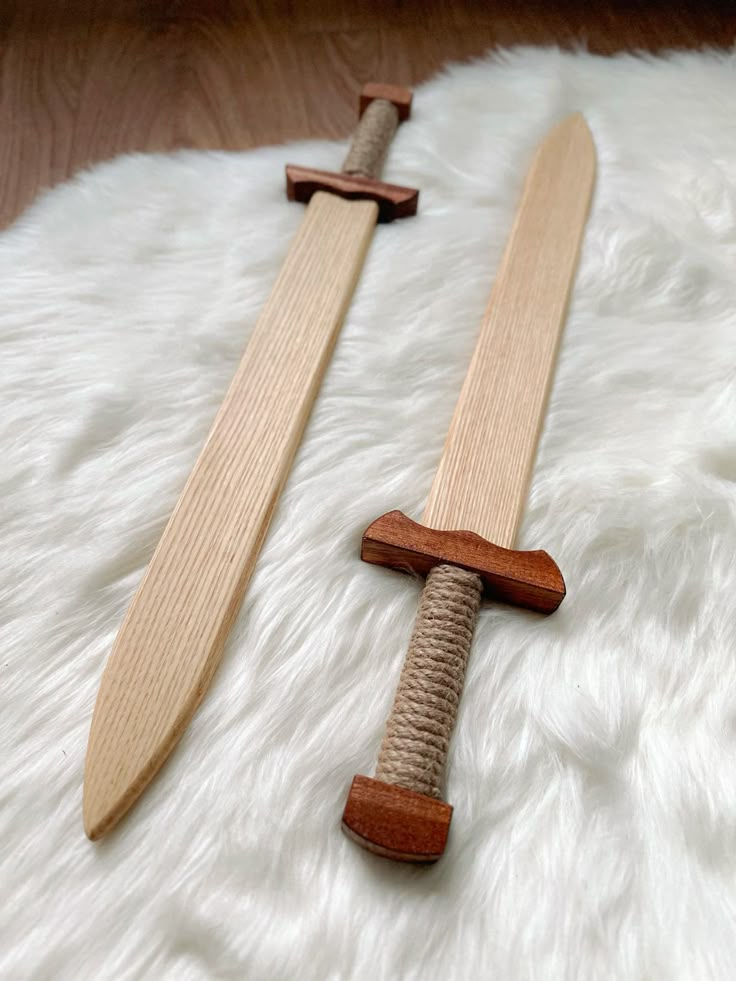
Cobre
Raramente um bom material para armas e armaduras. Amplamente usado como material para a produção de bronze com alguns magos preferindo utilizar objetos de bronze devido a sua grande afinidade com raios e tempestades.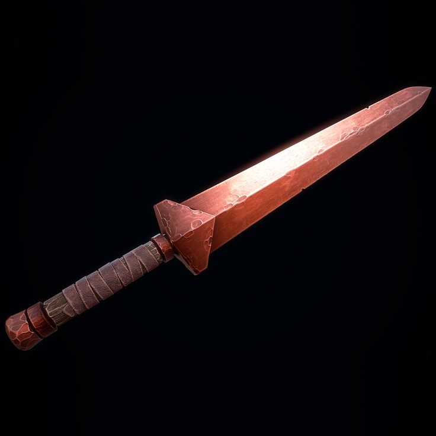
Ferro
O material mais comum entre todos. Usado em larga escala, especialmente para fabricação de armas e armaduras. Dizem que o ferro é o "pai" de todos os materiais devido a lenda de que a primeira arma forjada pelos humanos foi uma feita de um "ferro puro e verdadeiro".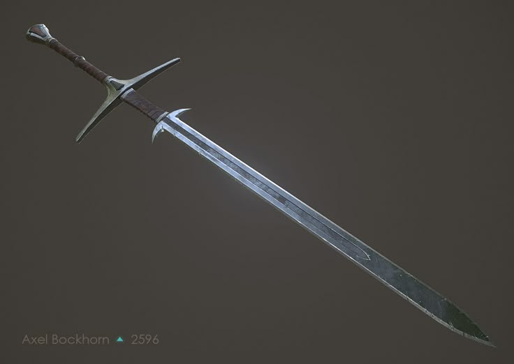
???
???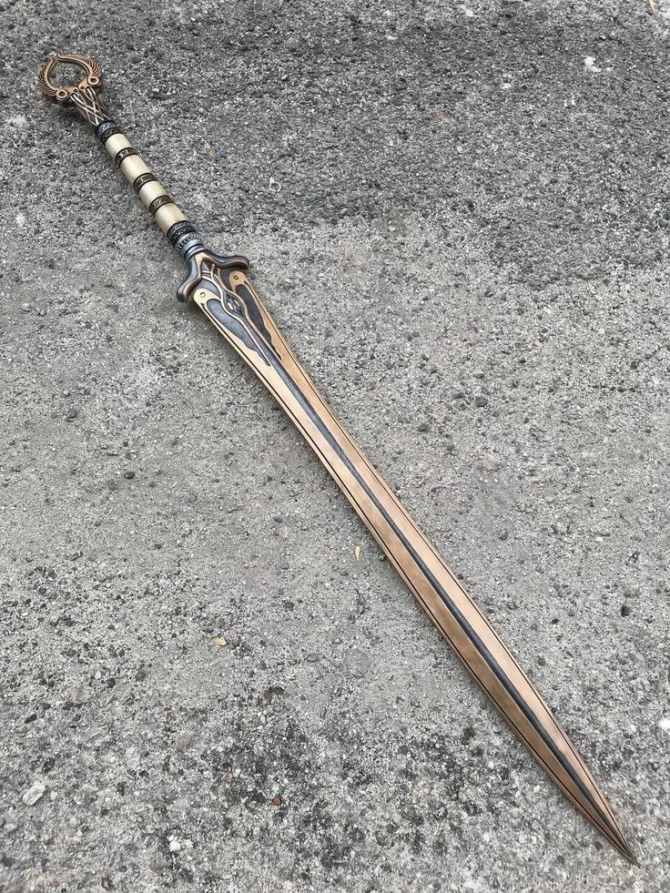
???
???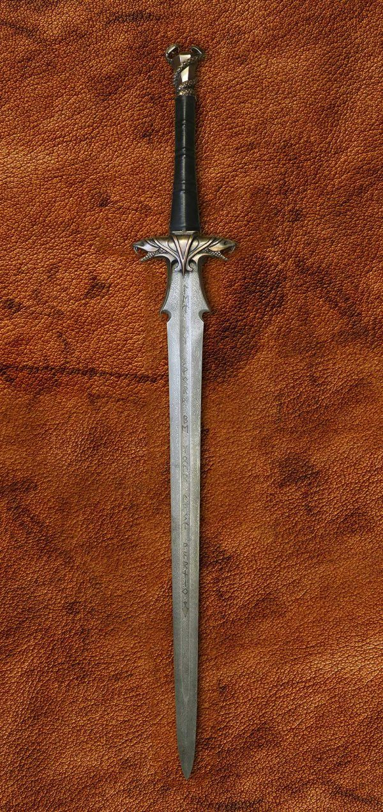
???
???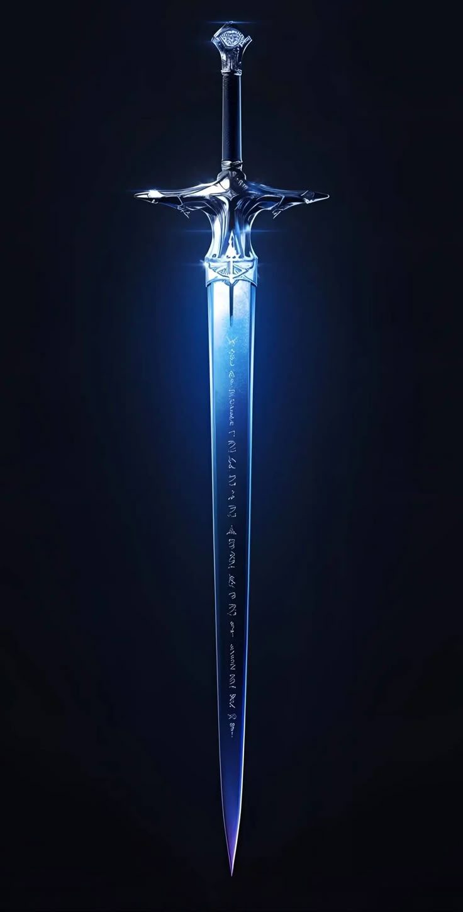
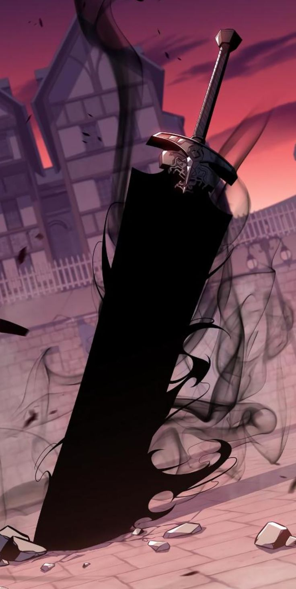
Artefatos e Itens Famosos
No Continente Mágico existem alguns artefatos que são tão poderosos que adquiriram nomes próprios
Gungnir
Registros antigos descrevem a arma do herói de maneiras conflitantes. Alguns relatos falam de uma longa lança, outros de uma espada de lâmina estreita, e há até testemunhos que mencionam um pesado machado de batalha. Todos concordam em um ponto: em cada batalha ela assumia a forma mais adequada para derrotar o inimigo.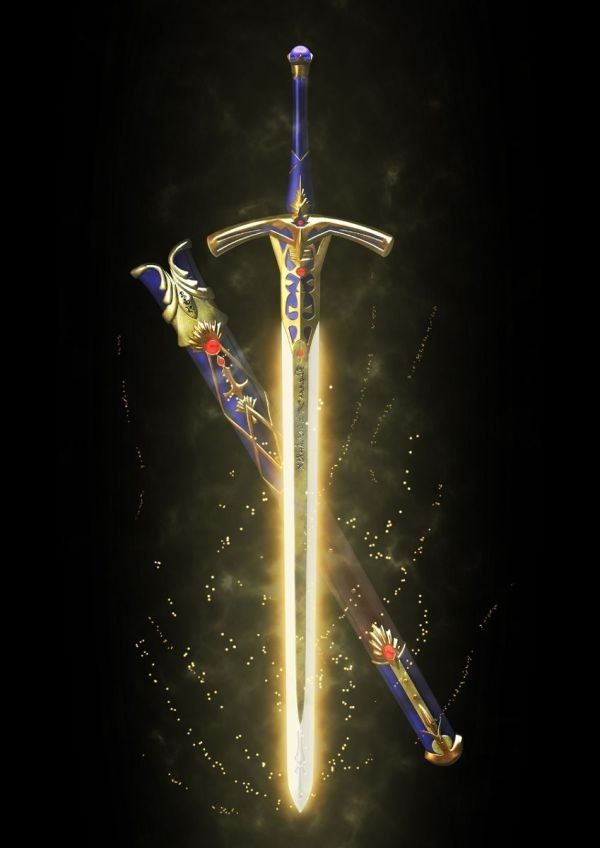
Armadura de Libra
A armadura usada pelo herói era feita de placas negras com delicados adornos dourados. O que mais chamava a atenção, eram as faces esculpidas em sua estrutura, uma no elmo, duas nas ombreiras e uma no peitoral. Muitos interpretam esses rostos como símbolos de sua extraordinária percepção no campo de batalha, pois parecia reagir a ataques vindos de qualquer direção. Acima do rosto no peito havia uma gema dourada cuja luz refletia como se fossse o próprio Sol.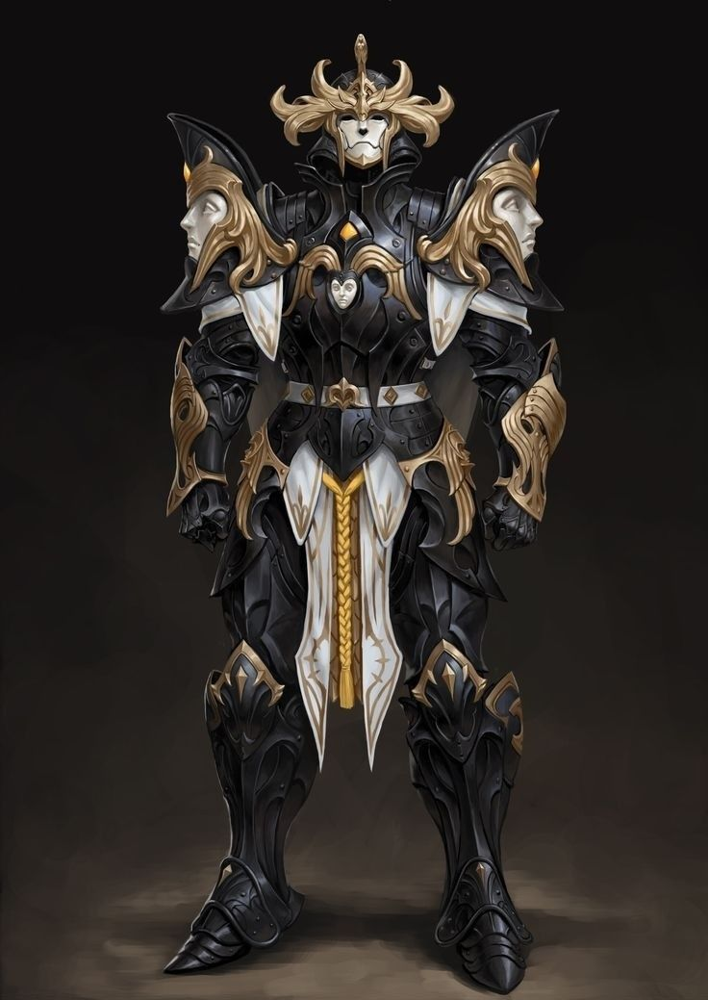
Quebra Regras
Um objeto do qual muitos historiadores duvidam sequer existir. De acordo com as histórias ela foi usada por uma bruxa poderosa para quebrar qualquer magia existente e até mesmo habilidades. Seu poder era tanto que ela conseguiu dissipar e quebrar a habilidade de um ser divino de poder igual ao do deus maligno. Hoje em dia ela é considerada como uma lenda e sua existência é altamente contestada.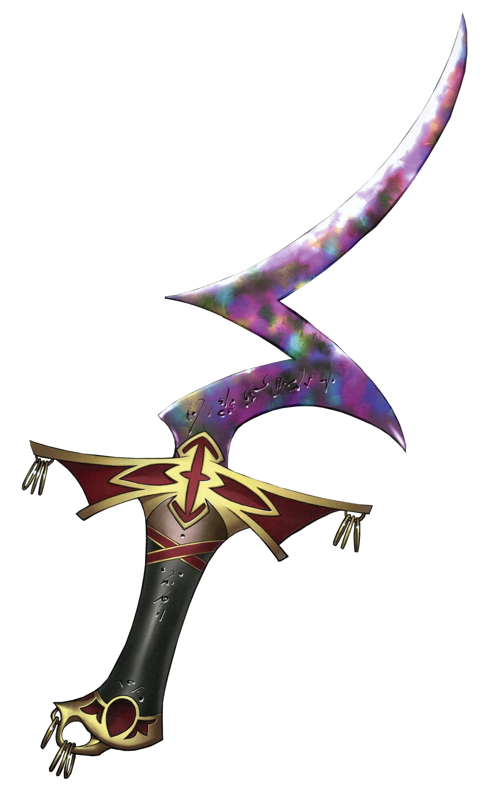
Infalível
O poderoso arco do filho dos grandes heróis. Todos que o presenciaram dizem escutar uma melodia de harpa antes de escutarem o som de ar sendo rasgado e seu inimigo derrotado. Conhecido também como "Aquele Que Não Erra" esse arco nunca errou um alvo sequer, nem mesmo demônios são capazes de escapar de suas flechas invisíveis.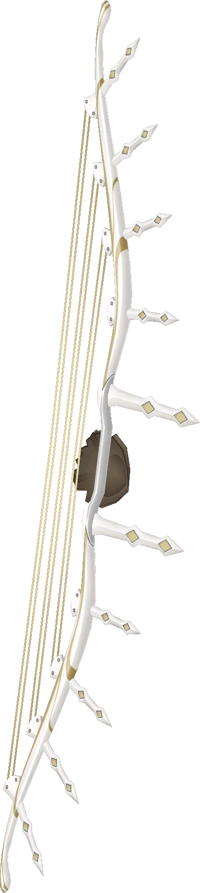
Tyrfing
Uma espada amaldiçoada que pertencia a um deus maligno. Dizem que sempre que ela é empunhada ela exige o sacrifício de uma vida para que ela reconheça seu novo mestre, caso ela não se banhe em sangue ela mata o próprio mestre e adormece até que outra pessoa a tente empunhar. Dizem que sua fome é interminável e que todo dia ela exige mais e mais de seu mestre até que um dia ela o devore por completo.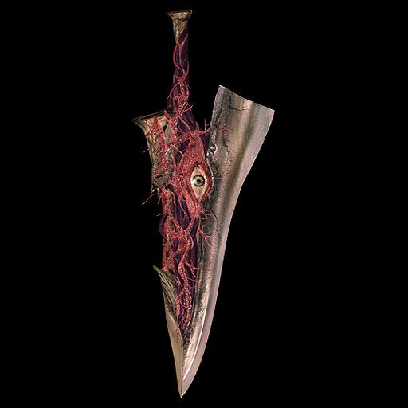
Monstro Nomeados
No Continente Mágico existem monstros tão poderosos que necessitam de um grupo de elite para serem derrotados, esse são os "Monstros Nomeados", muitos ainda são desconhecidos e a Guilda dá recompensas ambos a quem descobre um novo monstro nomeável e a quem derrota, e pode comprovar, um monstro desse nível.
Quematrice
Pouco se sabe sobre a Quematrice, esse monstro foi primeiro encontrado e nomeado por Jaeger, sabemos da existência de dois monstros mas é especulado que podem existir mais. Eles são altos, com aproximadamente 11 metros. Com uma personalidade instável, de acordo com Jaeger "Só olhar errado para uma já é suficiente pra levar uma caldada", elas atacam com sua calda e usam ataques de chamas como dragões. Mas não são muito resistentes, tendo um couro mais maleável e feito para aguentar pancadas e não cortes.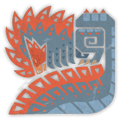
Espreitador das Ruinas
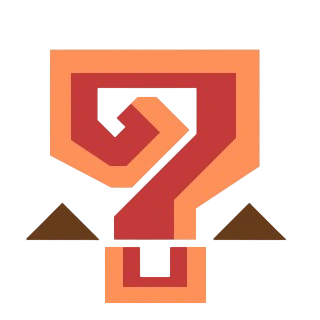
???
『 Força de Aço 』
Tipo: Ativa
Custo: 2 de magículas
Alvo: Próprio usuário
Alcance: Próprio
Duração: 2 rodadas
Você concentra sua força física além dos limites normais,
tensionando músculos e estrutura corporal para liberar um poder bruto superior.
Enquanto ativa, você recebe:
+2 em rolagens de Força
+1d4 de dano adicional.
Observações:
Pode ser desativada apenas na troca de rodada.
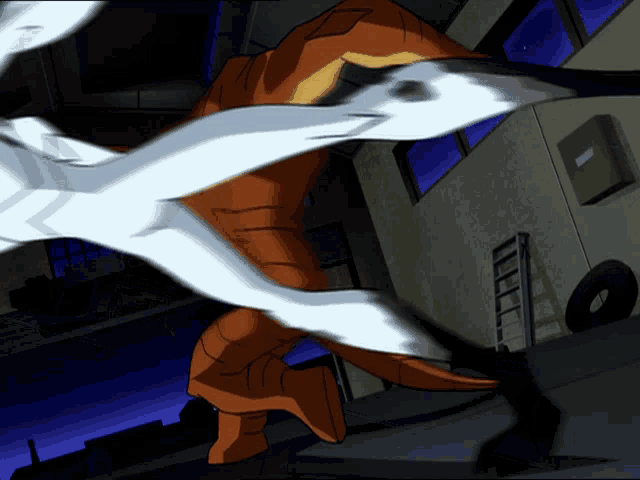
『 Bestializar 』
Tipo: Ativa
Alvo: Próprio usuário
Alcance: Próprio
Duração: Até ser desfeita
Você altera sua estrutura física, alternando livremente entre sua forma humanoide e sua forma bestial.
A transformação pode assumir três estágios distintos:
Forma Bestial Completa:
+2 em Agilidade
-2 em Inteligência
Forma Híbrida ou Parcial:
+1 em Agilidade
-1 em Carisma
A forma humanoide não concede modificadores.
Observações:
Cada mudança de forma consome o custo total da habilidade.
A transformação é instantânea, mas apenas uma pode ser realizada por rodada.
Enquanto na forma humanoide você ainda tem traços animais, como orelhas no topo da cabeça, cauda e etc.
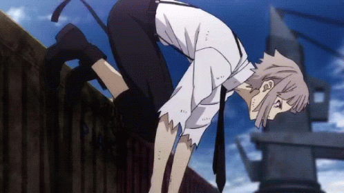

『 Corpo Bestial 』
Tipo: Ativa
Custo: 5 de magículas
Alvo: Próprio usuário
Alcance: Próprio
Duração: 3 rodadas
Devido à sua linhagem de licantropo, você desperta um estado primitivo de combate,
amplificando temporariamente suas capacidades físicas além dos limites naturais.
Enquanto ativo, você recebe:
+5 em Força
+5 em Vigor
+5 em Agilidade
Além disso, ao ativar a habilidade, você recupera:
1d15 de Vida
1d5 de Estamina
Ao término da duração, o corpo sofre um forte rebote fisiológico, recebendo:
-5 em Força
-5 em Vigor
-5 em Agilidade
E perde:
1d5 de Estamina.
O rebote dura até recuperar toda a estamina ou após um descanso longo (no mínimo 8 hrs).
Observações:
O rebote ocorre automaticamente ao final da duração e não pode ser evitado.
Caso o usuário esteja com 0 de estamina ao sofrer o rebote, ele fica desmaiado até recuperar pelo menos 1 de estamina.
A habilidade não pode ser reativada enquanto os efeitos do rebote estiverem ativos.
『 Auto Regeneração 』
Tipo: Passiva Verdadeira
Custo: 1 magícula por ativação automática
Alvo: Próprio usuário
Enquanto possuir magículas e um corpo material não completamente destruído,
o corpo do usuário se reconstrói automaticamente ao sofrer danos.
Sempre que o usuário sofrer dano,
a habilidade é ativada automaticamente, consumindo 1 magícula e restaurando 1d8 de Vida no início do turno seguinte.
A regeneração é capaz de reconstruir tecidos,órgãos internos e até membros perdidos, desde que ainda exista estrutura corporal
suficiente para sustentar a recuperação.
Observações:
A habilidade não pode ser desativada. Apenas por meios externos.
Caso o usuário não possua magículas suficientes, a regeneração não ocorre.
Múltiplas fontes de dano na mesma rodada ainda consomem apenas 1 magícula, ativando apenas uma instância de regeneração por rodada.
Não regenera caso o corpo seja completamente destruído ou desintegrado.
『 Exoesqueleto 』
Tipo: Passiva Verdadeira
Seu corpo possui uma estrutura óssea externa que funciona como uma armadura natural,
tornando-o significativamente mais resistente que a maioria das criaturas.
Você recebe:
Vig+10 de Bloqueio
Além disso, é considerado permanentemente como estando usando armadura para fins mecânicos,
mesmo que não esteja utilizando equipamentos defensivos.
Observações:
Pode ser quebrada, assim desativando seu efeito.
Enquanto sob efeito desta habilidade não é possível usar uma armadura.
『 Asas de Mariposa 』
Tipo: Passiva/Ativa
Devido à sua fisiologia de mariposa, você possui asas funcionais adaptadas para sustentação aérea leve.
Você recebe:
Metade de sua Movimentação como deslocamento de Voo.
Esse voo é estável em curtas distâncias e permite permanecer no ar por alguns minutos antes de necessitar pousar ou descansar.
A habilidade não exige ativação consciente, mas depende da integridade física das asas.
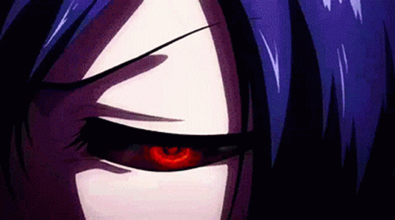
『 Corpo de Magíaço 』
Tipo: Passiva Verdadeira
Devido à sua constituição composta por Magíaço, seu corpo possui resistência estrutural superior à de criaturas comuns.
Você recebe:
+2 em Vigor
+5 de Bloqueio
Além disso, é considerado permanentemente como estando usando armadura para fins mecânicos,
mesmo que não esteja utilizando equipamentos defensivos.
Observações:
Efeitos que ignoram armadura ainda podem afetar o usuário normalmente.
A habilidade não pode ser desativada ou suprimida por meios comuns.